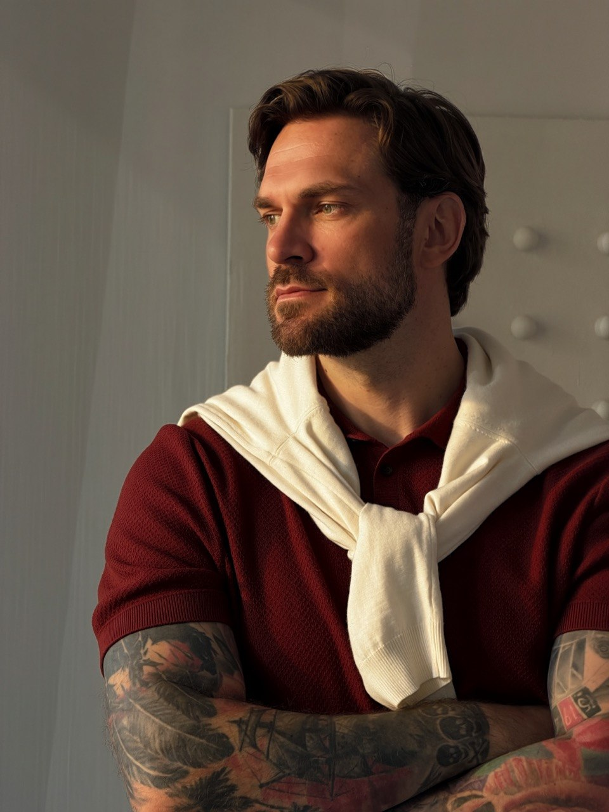

Обсуждаем запрос
Что привело тебя сейчас? Как это проявляется в жизни? Что уже пробовал? Я уточняю важное и делюсь предварительным пониманием ситуации.
Тревога, отношения, усталость, сомнения в себе. На консультации можно разобраться в том, что беспокоит, даже если пока трудно подобрать слова.
Записаться на первую встречу ↗Можно начать с ситуации, которая повторяется, мысли, которая не отпускает, или чувства, с которым трудно оставаться одному.
Постоянно тревожусь. Даже когда ничего не происходит.
Трудно расслабиться, мысли возвращаются к тому, что может пойти не так.
После работы сил хватает только дойти до кровати.
Обычные дела требуют усилий, на себя и близких почти ничего не остаётся.
Мне плохо в этих отношениях, но уйти не получается.
Решение расстаться сменяется возвращением. Хочется понять, что удерживает и как поступить.
Боюсь отказать. А когда отказываю, чувствую вину.
Трудно говорить о своих потребностях, если близкий может обидеться или рассердиться.
Что бы я ни делал, всё равно недостаточно.
Сравниваю себя с другими, обесцениваю сделанное и замечаю прежде всего свои недостатки.
Не понимаю, чего хочу и куда двигаться дальше.
Работа, планы и решения вызывают растерянность. Страшно ошибиться и снова выбрать неподходящее.
Выбираю то, чего ждут близкие. А сам этого не хочу.
Сложно отделить собственные желания от требований семьи и выдержать несогласие.
Не обязательно заранее точно формулировать запрос. На первой встрече обсудим, что беспокоит тебя сейчас и подходит ли мой формат.

Можно задавать вопросы, поправлять меня и говорить, если тебе что-то не подходит. Для этого не нужно ждать последней встречи.
Что привело тебя сейчас? Как это проявляется в жизни? Что уже пробовал? Я уточняю важное и делюсь предварительным пониманием ситуации.
Если решаем продолжать, согласуем, с чего начнём. Содержание встреч зависит от твоего опыта и запроса. Одинаковой программы для всех нет.
Обсуждаем, что становится понятнее, что происходит вне консультаций и что остаётся трудным. В процессе работы подводим промежуточные итоги.
30 минут · онлайн
Одна встреча · 50 минут · онлайн
Очные встречи — по договорённости. Стоимость отличается от онлайн-консультаций и обсуждается отдельно. Психологическая поддержка в переписке между консультациями обсуждается отдельно и оплачивается дополнительно.
Можно рассказать о недавней ситуации или о том, как ты себя чувствуешь. Помогу уточнить, что сейчас важнее всего обсудить.
Нет. Сначала ознакомительная встреча. Затем каждый из нас решает, готов ли продолжать. Можно взять время на решение.
За 24 часа и раньше переносим без потери оплаты на удобное обоим время. Условия поздней отмены обсуждаем до оплаты и фиксируем в правилах работы.
Можно остановиться. Условия дальнейшей работы и прекращения встреч обсудим на ознакомительной консультации. Если встречу отменяю я, предлагаю перенос или возврат оплаты за неё.
Да. По организационным вопросам можно написать мне в Telegram. Психологическая поддержка в переписке между консультациями обсуждается отдельно и оплачивается дополнительно. Экстренная помощь в этот формат не входит.
Наши разговоры конфиденциальны. Я не передаю содержание консультаций третьим лицам без твоего согласия, кроме случаев, предусмотренных законом. Эти исключения обсудим до начала работы.
Напиши мне в Telegram: «Хочу записаться на ознакомительную встречу». Подробно рассказывать личную историю в сообщении не нужно.
Согласуем формат и время. До оплаты я отправлю условия работы.